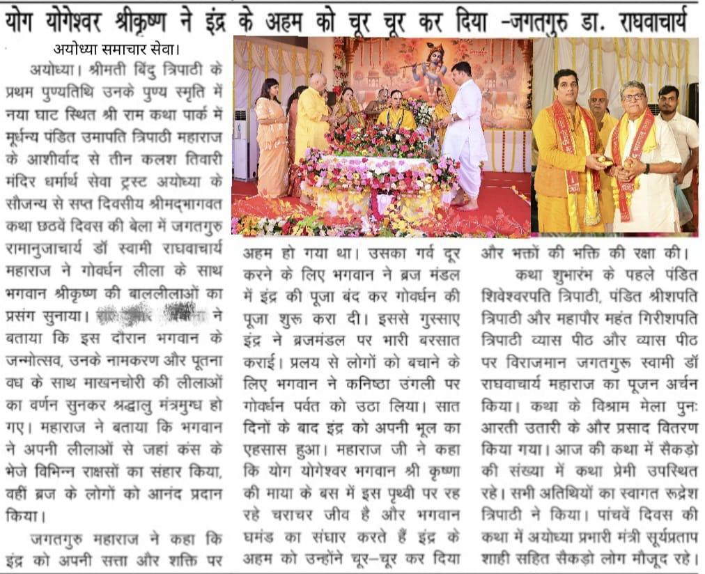
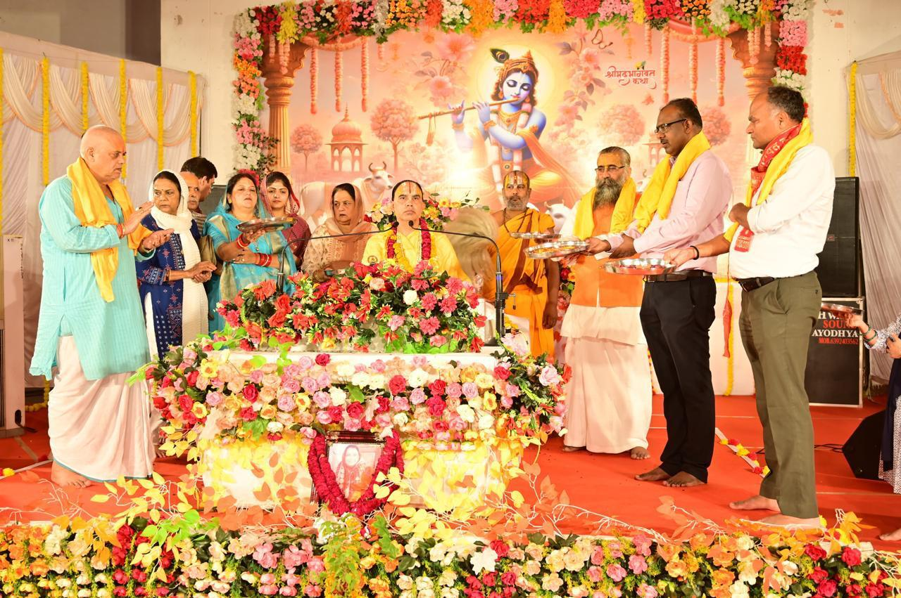

Feed monkeys
₹1,001 sponsors a one-time serving of chana for monkeys. Share your payment confirmation and initiative name after offering seva.
Welcome to Teen Kalash Tiwari Mandir — a sacred space by the ghats of Ayodhya, where devotion finds expression through prayer, seva, and care for every living being.


Teen Kalash Tiwari Mandir is a place for prayer, reflection, and heartfelt service in the holy city of Ayodhya. We welcome devotees, neighbours, and visitors to share in a spirit of reverence and compassion.
₹1,001 sponsors a one-time serving of chana for monkeys. Share your payment confirmation and initiative name after offering seva.
₹1,500 helps provide a nourishing feast for cows, an offering of care and gratitude.
Contribute any amount toward the temple’s daily needs, upkeep and devotional activities.
Scan the official QR to make a contribution. We are grateful for every gesture of faith.